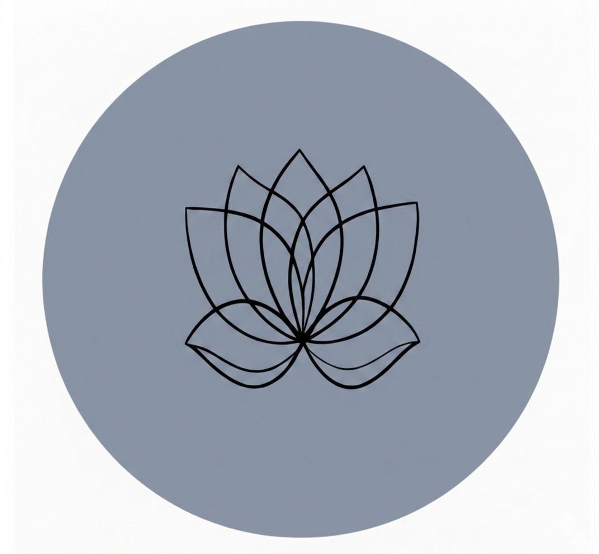
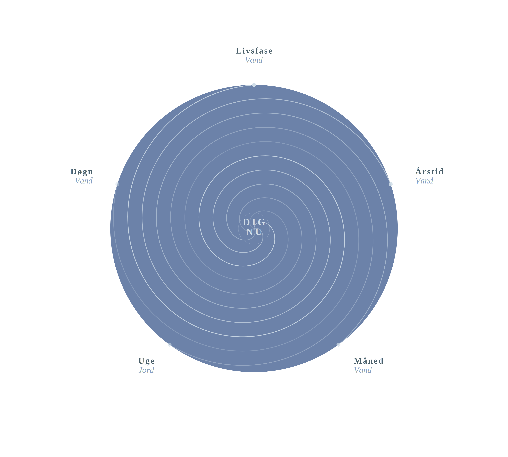
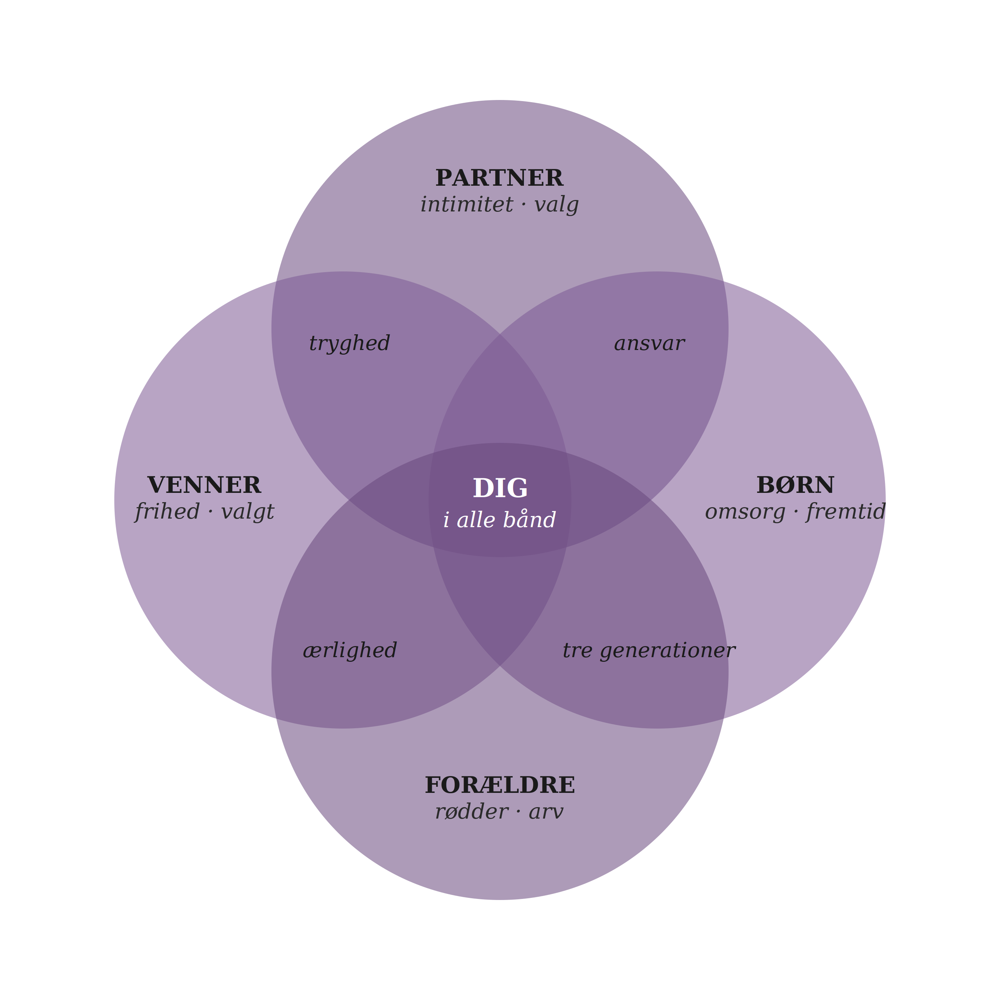

I dag · God eftermiddag
水
Vand
stilhed · dybde · intuition
I dag · God eftermiddag
stilhed · dybde · intuition

Dine fem cyklusser samler sig i dag. Mærk efter — din krop ved allerede, hvad den har brug for.
Dit organur lige nu
Kl. 15–17 · Blæren
Blærens energi er aktiv nu. Det er tiden til at lade kroppen rense og finde stilhed. Drik vand, sænk tempoet, og mærk hvad der vil slippe.
Foråret vækker Træets energi i dig — vækst, retning og nyt mod. Dit Vand-element møder denne kraft med stilhed og lydhørhed.

Din handling lige nu

En blid yin-stilling der åbner nyrernes meridian og støtter Vandets kvaliteter: ro, dybde og indre lytten.
Temaer i dit element
Dig og din relation

Jeres energi i dag
Dit Vand møder Ildens intensitet med stilhed og dybde — en balance mellem kraft og ro.
I dag kan I finde styrke i kontrasten. Lad Ilden inspirere, og lad Vandet berolige.
Mærk efter
Hvordan mærker du dig selv lige nu?
Vælg det der passer bedst
Refleksion
Hvad ville dit liv se ud, hvis du turde hvile lige så dybt, som du arbejder?
Dyk dybere
"Vandet kender vejen — det behøver ikke et kort."